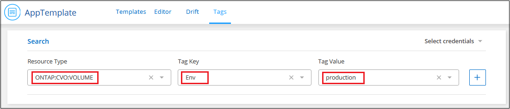

ドキュメントの変更をリクエスト
ドキュメントの変更をリクエスト GitHub で編集
GitHub で編集 寄稿者向けガイド
寄稿者向けガイドリソースのタグを管理します
Cloud Manager Tagging サービスを使用して、既存のリソースに割り当てられたタグを表示、追加、変更、および削除できます。これにより、リソースの管理を整理して簡単に行うことができます。
特定のタグを持つリソースを検索します
特定のタグを持つすべてのリソース、または特定のタグとタグキーの値を表示するには、それらのタグを検索します。すべてのリソースを検索することも、特定のリソースカテゴリ内だけを検索することもできます。
-
* AppTemplate* サービスを選択し、 * タグ * タブをクリックします。
-
必要に応じて、特定のクラウドプロバイダのクレデンシャルを [ * クレデンシャルの選択 * ] フィールドで選択します。
-
リソースタイプフィールドで、リソースを選択します。たとえば、「 * ONTAP ： CVO ： volume * 」と入力して、すべての Cloud Volumes ONTAP ボリュームを検索します。
-
_Tag Key_field で、「 * env * 」などのようにタグを選択し、「 env 」タグを使用してボリュームの検索を制限します。
-
_Tag value_field で ' キー値を選択しますたとえば '*production * と入力すると ' タグ名が env でタグ値が "producting" のボリュームのみに検索が制限されます

-
をクリックします
 検索領域にこの検索条件を追加します。
検索領域にこの検索条件を追加します。
-
検索が完了したら、 * Search * をクリックして、検索結果を Resources セクションに表示します。

さらに検索条件を追加する場合は、手順 3 から 6 をもう一度実行して、 * 検索 * をクリックします。
検索ルール
検索を定義するときは、次のルールが適用されます。
-
リソースタイプを選択した後、任意のキーと任意のキー値を持つすべてのリソースをリストする場合は、 [ タグキー ] フィールドと [ タグ値 ] フィールドを空白のままにしておくことができます。
-
1 つの検索を選択することも、複数の検索を定義して [ リソース ] セクションで結果を絞り込むこともできます。
-
複数の検索条件セットを定義する場合：
-
2 つの検索条件が異なるリソースタイプを対象としている場合は、「 OR 」操作として扱われ、両方の検索のリソースが結果に表示されます。たとえば、「 Environment:demo 」タグ値が設定された Azure NetApp Files ボリュームと「 Environment:demo" タグ値が設定されたすべての Cloud Volumes ONTAP ボリュームが返されます。

-
2 つの検索条件が同じリソースタイプを対象としている場合は、「 AND 」操作として扱われ、 * both * 検索条件に一致するリソースのみが結果に表示されます。たとえば、次の検索では、「 Environment:demo" タグ値と「 Group:Finance 」タグ値の両方を持つ Azure NetApp Files ボリュームが返されます。

-
-
複数の検索条件を定義している場合は、削除する検索条件を選択するには、をクリックします
 検索領域から削除します。
検索領域から削除します。
既存のリソースにタグを追加する
タグは、単一のリソースまたは複数のリソースに適用できます。リソースに既存のタグがあるか、現在のタグがない可能性があります。
-
[ * タグ * （ * Tags * ） ] タブで検索条件を作成し、 [ * 検索（ * Search ） ] をクリックします。
-
タグ付けするリソースを選択します。
-
ページ上のすべてのリソースを選択するには、タイトル行（
 ）。
）。 -
複数のリソースを選択するには、各リソース（
 ）。
）。 -
単一のリソースを選択するには、をクリックします
 アイコンをクリックします。
アイコンをクリックします。
-
-
[ * タグの管理 * ] をクリックすると、 [ リソースタグ _ ダイアログ ] が表示されます。このダイアログには、既存のタグがすべて表示されます。

-
[ 新しいタグの追加 ] をクリックすると、ダイアログに空の [ タグキー ] 行と [ タグ値 ] 行が表示されます。
-
タグキーとタグ値を入力します。このリソースにさらにタグを追加する場合は、この時点でタグを追加し、 * Review and Apply * をクリックします。
-
_Reviewing_page で変更内容が正しい場合は、 * Save * をクリックすると、新しいタグがリソースまたは選択したすべてのリソースに追加されます。
リソースのタグ値を変更します
リソースに割り当てられているタグを変更したり、既存のタグに適用されているタグの値を変更したりできます。
-
[ * タグ * （ * Tags * ） ] タブで検索条件を作成し、 [ * 検索（ * Search ） ] をクリックします。
-
タグを変更するリソースを選択します。
-
[ * タグの管理 * ] をクリックすると、 [ リソースタグ _ ダイアログ ] が表示されます。

-
タグ値の新しい値を入力し、 * レビューおよび適用 * をクリックします。
-
_Reviewing_page で変更内容が正しい場合は、 * Save * をクリックし、リソースまたは選択したすべてのリソースのタグ値が変更されます。
リソースからタグを削除します
タグキーと値のペアは、単一のリソースまたは複数のリソースから削除できます。
-
[ * タグ * （ * Tags * ） ] タブで検索条件を作成し、 [ * 検索（ * Search ） ] をクリックします。
-
タグを削除するリソースを選択します。
-
[ * タグの管理 * ] をクリックすると、 [ リソースタグ _ ダイアログ ] が表示されます。

-
をクリックします
 削除するタグキーと値のペアで、行が削除され、 * レビューと適用 * をクリックします。
削除するタグキーと値のペアで、行が削除され、 * レビューと適用 * をクリックします。 -
_Reviewing_page で変更内容が正しい場合は、 * Save * をクリックします。タグキーと値のペアがリソースまたは選択したすべてのリソースから削除されます。